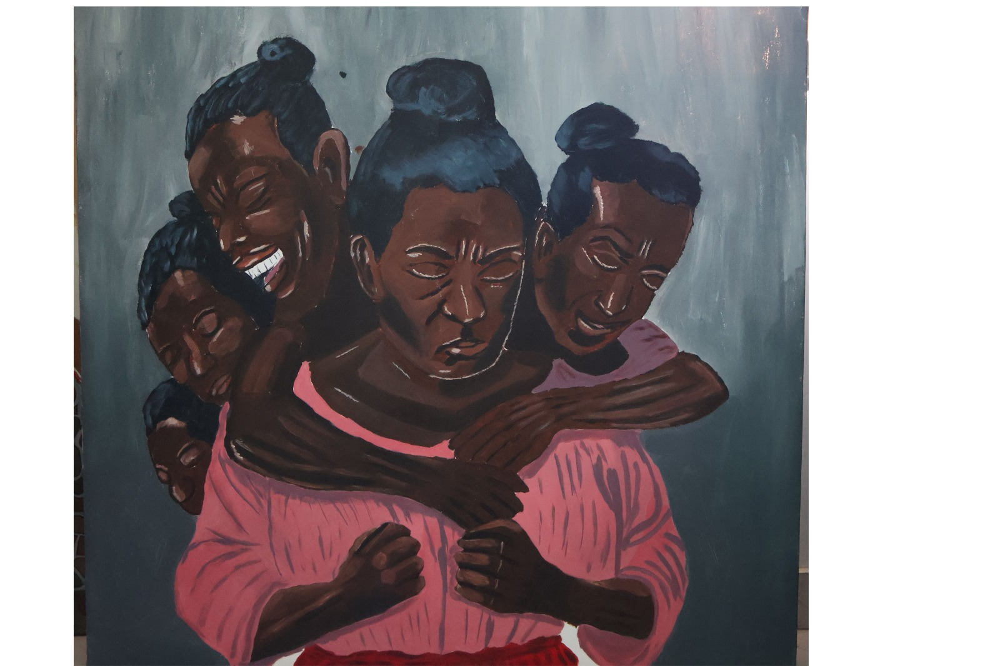

Pull Within
A surreal portrayal of an African woman held between shadow and light as multiple inner selves pull at her from behind. The work explores inner conflict, self recognition, and the tension between who one has been and who one is becoming.